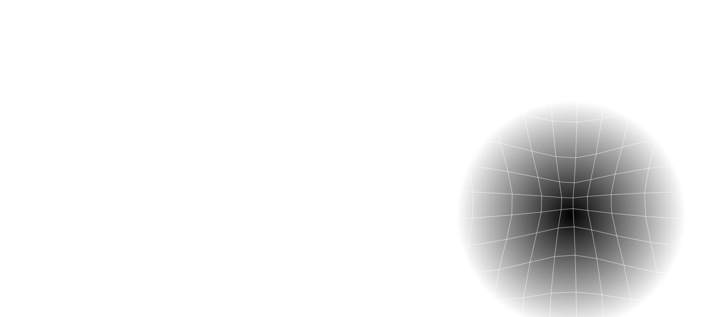
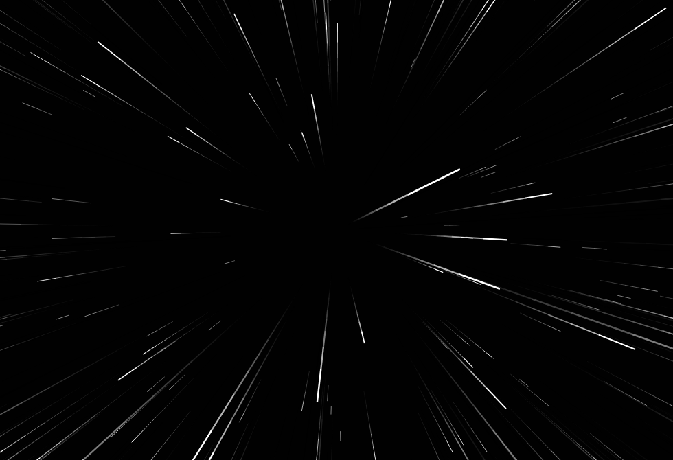
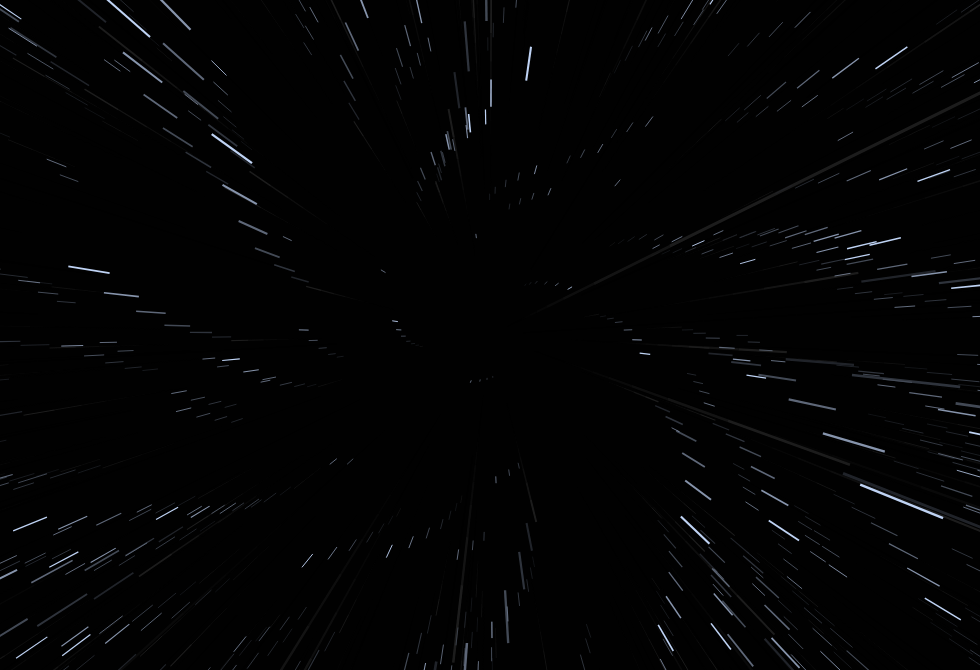

Recovered E-Summit 2026 background effects — live captures from the reconstructed code
Every pixel below was rendered by the recovered component code (spliced verbatim out of the production bundle), captured live in Chromium.

app-gravity-bgGrid mesh — 60 px lattice, spring-coupled nodes,
cursor repels within r=250 px, everything else erased by the destination-in radial mask.
9 021 lit px (1.37% of canvas) · all white · 74% of the canvas is fully transparent.

app-loading-screenPhase 1 — warp speed — 800 stars streaking out
from the vanishing point, lineWidth = max(.5,(1-z/W)*3), strokeStyle="white".
15 828 lit px · 100% pure white (blue=0) · max luminance 255.

app-loading-screenPhase 2 — deceleration / swirl —
C = max(2,45-U*43) shortens the streaks while they swirl around the centre.
8 941 lit px · 8 082 ice-blue vs 859 white — the stroke turns
rgba(200,220,255,1) · max luminance 196 (the 0.5× globalAlpha fade).

app-loading-screenPhase 3 — the lightning bolt —
drawDynamicComet: a cubic Bézier bolt with 30 streaks, a pinch at the head and a glowing disc.
45 541 lit px (6.51% of canvas) · max luminance 255 at (966, 321) · centroid (797, 553).